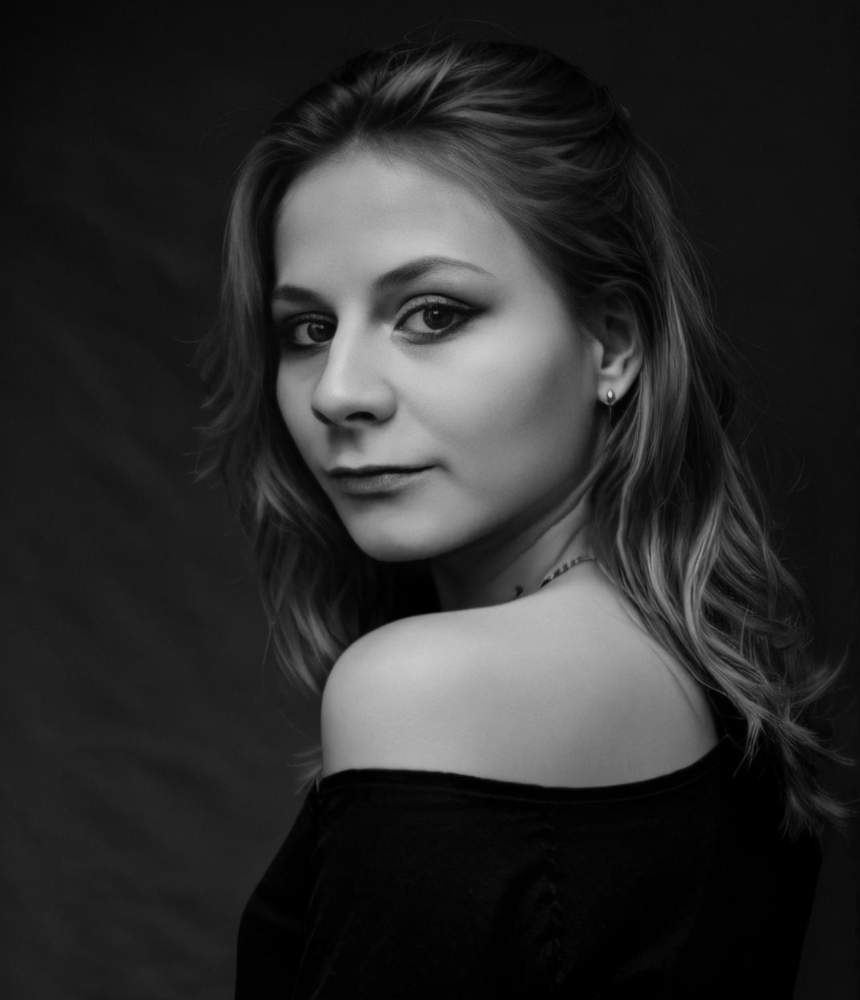

À Propos de Moi
Artiste en herbe passionnée par la peinture depuis la fin de mes études supérieures, l'art est une partie intégrante de ma vie.
Je me laisse guider par l'instinct, autant d'un point de vue imaginaire que technique. L'objectif de mes peintures est de les laisser libres d'interprétations et de pousser les limites de ma créativité.
